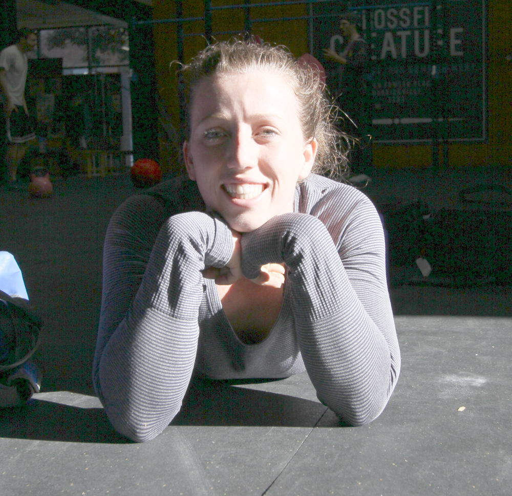

- Super hero wraps
- I got these at regionals.. I had just bought a plain pair (also in bag) a few weeks before... but I couldn't resist. In conjunction with my spiderman shoes, I was sure to be a force to be reckoned with.
- Dencorub
- I don't actually use this, other people appreciate it.. And I swear it had a lid, note to self- don't let Dave McMahon borrow things unsupervised.
- rogue wrist wraps
- Ron pitied me and my pathetic sore wrists one day, so he gave me these.. they stay in my bag, you know in case the other two pairs disappear. Girl Scout- always prepared.
- Appropriately Labelled Bandaids
- These bandaids let the world know were I sustained my injuries. whether it be via jousting, shark bites, ninja fights or most commonly dance offs. They are of great importance so people don't just think I walked into a J-Hook or something else unimpressive.
- Boring Bandaids
- These are my boring bandaids- for when I walk into J-Hooks
- Felt Notebook
- I'm trying to be diligent and write down my workouts- more so the weights I use. Partly because I have a really pathetic memory for certain facts and mostly because I was told too, or there would be consequences. It's felt- it feels fancy.
- Vet wrap- 2 rolls
- yes vetwrap gets used on animals. But, it is also surprisingly handy for when you tear your hands to shreds and still want to do things.
- Knicks Sweat Band
- Because its hilarious to walk round the gym with it on and make it rain with chalk.
- Tshirt
- Just a spare shirt. But it's from New York- so it kind of makes it a big deal. And the back has a ninja turtle on it. jealousy is a curse.
- lifters
- These are my first ever lifters, they do the job.. I feel super stable in them. The rumours they help you lift 20% more- all true.
- Green teabag
- Essential component of every gym bag. A single tea bag. I don't know when this appeared here, but it could be useful one day.
- Voodoofloss
- I don't really know how to use this effectively.. but every time I try, I think it helps.
- sock
- Just one.. this really says a lot about me..
- Third box of Bandaids
- Girl Scout- Always prepared. and always clumsy.
- red wraps
- My first pair of strength wraps. I love them, they are hardy and help my puny wrists.
- kneesleeve
- Just one... damn it.. I don't even how long ago I lost it. However- blue Rehbands are the bomb. Don't buy into other crap.
- Rx rope
- i never thought I would spend so much on a skipping rope and be so happy with it. I love it. It is time for me to get a new cable however.
- bag
- I bought this bad in London Reebok, then it came out in Australia in more colours, its too small. time to upgrade
- JAW grips
- I don't use these any more, I used to find they helped my pullups.. but now they just bug me. I have the four finger ones, which I preferred over the two finger option.
- Arm Band Phone Case
- For when I go running and play music out loud so all the other pedestrians can hear
- Kinesiology tape
- I just use it for my thumbs when I do hook grip (I never actually hook grip- this should change). it is extremely useful- both the tape and hook grip.
- scissors
- goes hand in hand with all my taping needs.
- What are you wearing right now?
- My prized Spiderman Reeboks- also known as mens crossfit nano sprint. They give me super powers- fact. 2XU full length tights- I love them so much I have three pairs. Lulu lemon long sleeve, it was my first ever lulu purchase- it is so warm its ridiculous.
- How long have you been doing crossfit?
- A little over a year now.
- What gym do you go to?
- EvokeFit and Crossfit Creature
- What's next on your kit shopping list?
- well I should probably re-invest in another knee sleeve..
- What do you do as a job?
- Competition history
- 2013 Beast of the East- 2nd Place
- What isn't in your bag that should be?
- I thought that there was some tape in there and some super glue. I also usually have a Nexus 7 tablet with me and some headphones. If I'm doing a long, slow row I'll listen to podcasts with it. I'm taking this photo with the tablet.
- What bit of kit would you use, even if you were sponsored by their competitor?
